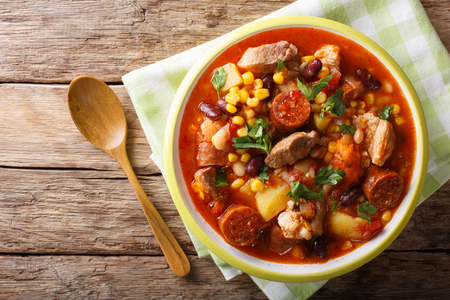

Recepten Internationale Gerechten

Ingredienten
- 500 g gedroogde gele mais
- 500 g gedroogde rode mais
- 250 g gedroogde bruine bonen
- 250 g zachte groene erwten
- 250 g gedroogde bruine erwten
- 250 g cassave
- 1 blik tonijn op olie
- 2 kleine chorizo worstjes
- 3 tomaten
- 6 teentjes knoflook
- 1 grote ui
- 1 mespuntje kruidnagelpoeder
- 2 blaadjes laurier
- 1 eetlepel tomatenpuree
- 3 eetlepels olijfolie
- wat peper en zout
Bereiding
- Breng circa 8 liter water aan de kook en was de gedroogde ingrediënten.
- Snij de knoflook, ui, cassave en tomaatjes in stukken. Snij de cassave niet al te klein. Ontvel de chorizo
en snijdt deze in plakjes.
- Bij gebruik van vlees, was de zoute krabbetjes goed.
- Voeg de gedroogde producten en de kruidnagel, laurier, knoflook, tomaat, uit, peper, zout, tomatenpuree en
de olijfolie in het kokende water. Bij de keuze voor vlees, voeg dit ook toe.
- Laat het geheel op laag tot middelmatig vuur koken totdat alles beetgaar is. Met een gewone pan duurt dit
maximaal 2 uur.
- Voeg daarna de chorizo, cassave of bakbanaan, tonijn en groene erwten toe. Laat dit nog 20-30 minuten
doorsudderen tot een gebonden soep.